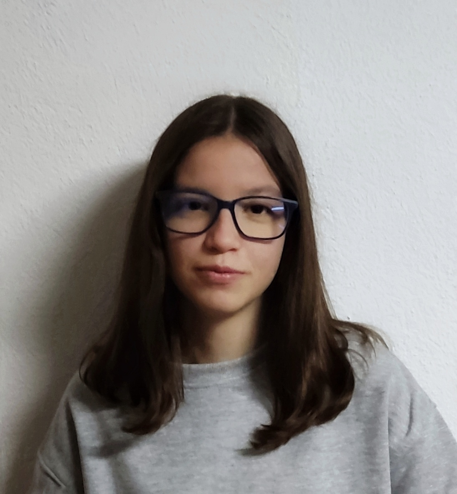

Qui soc?
Soc la Júlia Carulla i actualment visc a Lleida. Estic estudiant desenvolupament d'aplicacions multiplataforma i tinc una experiència prèvia de 1 any i 10 mesos en l'àmbit administratiu i 4 mesos de desenvolupament web amb gestors de contingut, com el Wordpress.
Encara que actualment no estic treballant, em destaco per la meva responsabilitat, autonomia i capacitat d'aprenentatge. Aquestes habilitats, juntament amb la meva formació acadèmica, em permeten adaptar-me ràpidament a nous entorns.
Fora de l'àmbit professional, gaudeixo molt escoltant música i practicant ciclisme de muntanya.
